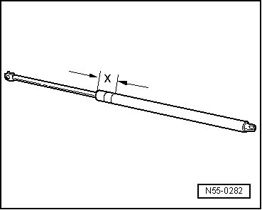

Procedures
Rear Lid
Gas Strut, Venting
- Clamp area - x - of the gas strut in the vise, area - x - = 50 mm.

CAUTION!
Clamping the gas-filled strut must only be done in this area - x -, otherwise there is a risk of an accident.
- Saw into the cylindrical part of strut in the first third of the total cylinder length, determined starting from the edge of the cover on the side with the piston rod.
• Always wear eye protection when sawing.
• Cover the area of the sawn-off portion with a clean rag.
• Dispose of the oil and rag properly.